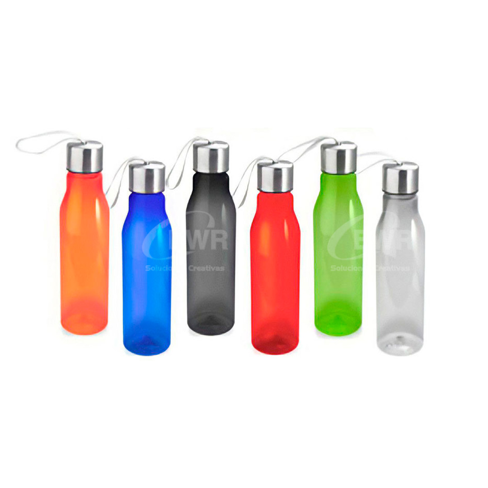
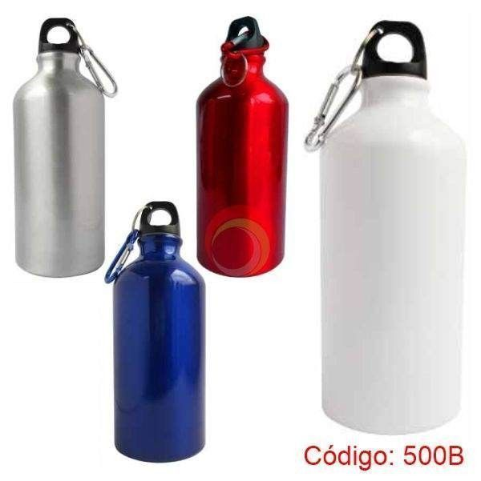

Bienvenido a nuestro sitio web
 
Descubre nuestra pasión por crear tomatodos funcionales y sostenibles, tanto de plástico como de metal. Explora las diferentes secciones para saber más sobre nosotros y nuestros productos.